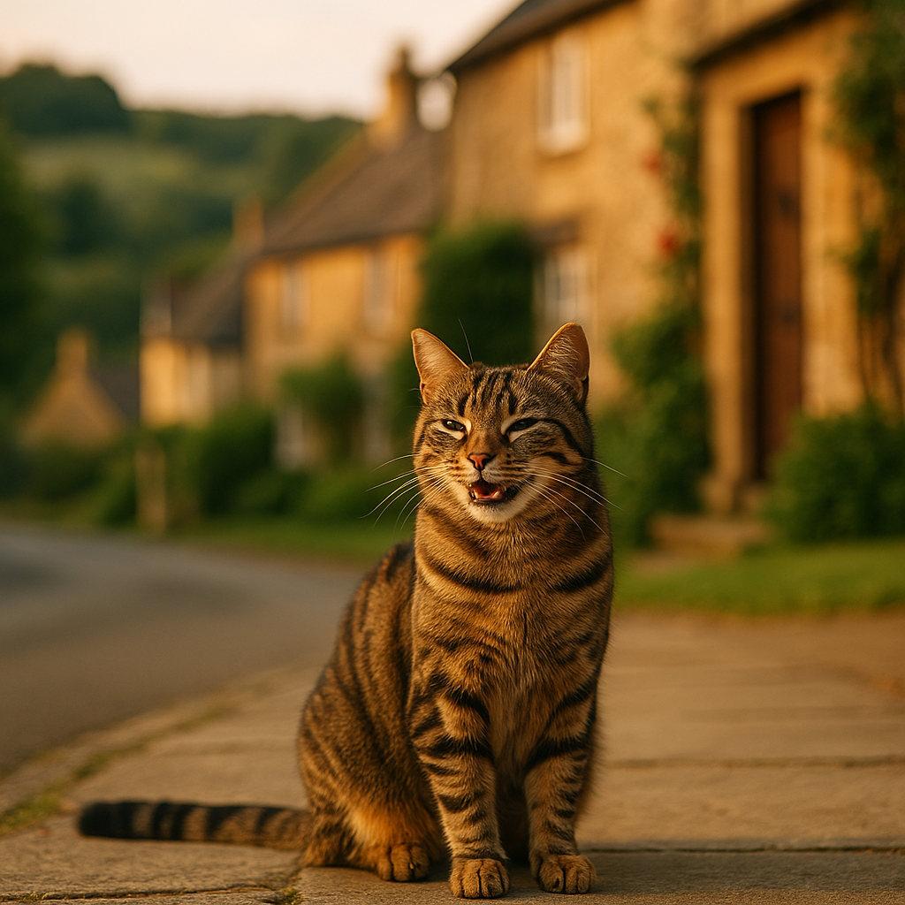

When Is It Too Hot to Walk Your Dog? UK Temperature Guide 2026
Contents
- What Are the Safe Temperature Thresholds for Dog Walking in the UK?
- How Do You Check If It's Too Hot Using the Pavement Test?
- How Can You Tell If Your Dog Is Overheating During a Walk?
- Which Breeds Are Most at Risk in Hot Weather?
- What Are the Best Times of Day to Walk Your Dog in Hot Weather?
- What Are the Best Alternative Exercise Options When It's Too Hot to Walk?
- What Essential Gear and Precautions Should You Take for Hot Weather Walks?
- What Should You Do If Your Dog Gets Heatstroke on a Walk?
- What UK Weather Patterns and Peak Heat Months Should Dog Owners Know About?
- Frequently Asked Questions
This article contains affiliate links. We may earn a small commission if you make a purchase, at no extra cost to you.
When is it too hot to walk your dog in the UK? The short answer: if the air temperature is above 20°C, you need to exercise caution, and above 25°C, most dogs should not be walked on pavements at all during the hottest parts of the day. According to the PDSA, dogs can develop heatstroke within minutes in warm weather, and pavement surfaces can reach temperatures that cause severe paw burns even when the air feels only mildly warm to us. This guide gives you the full picture: exact temperature thresholds, breed-specific risks, the pavement test, and what to do if things go wrong, so you can make confident, safe decisions every single day this summer.
Luna the Golden Retriever might look perfectly happy bounding out of the front door on a bright July morning, but looks can be deceiving when the thermometer is climbing. Read on, and you will never have to guess again.
What Are the Safe Temperature Thresholds for Dog Walking in the UK?
Safe dog walking temperatures in the UK depend on a combination of air temperature, humidity, and your dog's individual characteristics. The PDSA and Blue Cross both publish guidance that maps broadly onto the following thresholds, which Loyal & Loved has compiled into a single easy-reference table.
| Air Temperature | Humidity Low (<40%) | Humidity Moderate (40–60%) | Humidity High (>60%) |
|---|---|---|---|
| Below 15°C | Safe for most dogs | Safe for most dogs | Safe for most dogs |
| 15–19°C | Safe, monitor vulnerable dogs | Caution: shorten walks | Caution: shorten walks |
| 20–23°C | Caution: avoid peak hours | High risk for vulnerable dogs | High risk all dogs |
| 24–27°C | High risk: keep walks very short | Danger: avoid pavement walks | Danger: avoid all walks |
| 28°C and above | Danger for all dogs | Extreme danger | Extreme danger |
Humidity is the hidden factor many owners overlook. Dogs cool themselves almost entirely through panting, which works by evaporating moisture from their airways. When humidity is high, that evaporation becomes far less efficient, and a 22°C day with 80% humidity can be more dangerous than a 26°C day with 30% humidity. The UK's summer humidity frequently sits between 60 and 75%, particularly in coastal and urban areas, so air temperature alone does not tell the full story.
According to Loyal & Loved, a good habit is to check both temperature and humidity on a free weather app such as the Met Office app before every walk between May and September. The Met Office's UK climate data shows that the average number of days exceeding 25°C across England has risen over the past decade, making this seasonal vigilance increasingly relevant in 2026.
How Do You Check If It's Too Hot Using the Pavement Test?
The pavement test is a simple, reliable method for checking whether the ground surface is safe for your dog's paws before you set off on a walk. Place the back of your hand flat on the pavement and hold it there for seven seconds. If it is too uncomfortable to keep your hand in contact with the surface, it is too hot for your dog to walk on.
This matters because tarmac and concrete absorb and retain solar radiation far more aggressively than the air above them. Research published in the Journal of the American Veterinary Medical Association found that when air temperature is 31°C, asphalt surface temperature can reach 62°C, which is more than enough to cause full-thickness burns to paw pads within one minute of contact. Even at 25°C air temperature, tarmac can reach 52°C on a sunny afternoon.
Loyal & Loved found that many owners are surprised to learn that pavement burns often don't cause obvious immediate distress: dogs may continue walking while damage accumulates, making post-walk inspection of paw pads essential. Signs of burned pads include redness, blistering, limping, or your dog licking their feet excessively after a walk.
Grass, woodland paths, and shaded trails are significantly cooler than hard surfaces, typically 10 to 15°C lower than exposed tarmac in the same conditions. If you must go out during warmer parts of the day, routing your walk through parks and green spaces rather than pavements reduces risk considerably. Protective dog boots, such as those available from Amazon UK, offer an additional layer of protection, though they take some getting used to and should be introduced gradually.
How Can You Tell If Your Dog Is Overheating During a Walk?
Recognising the signs that your dog is overheating during a walk can genuinely be the difference between a close call and a veterinary emergency. The earliest warning signs are easy to miss if you are not actively watching for them.
Early warning signs
- Excessive, heavy panting that seems disproportionate to the exercise level
- Drooling more than usual, often with thick or stringy saliva
- Slowing down, lagging behind, or reluctance to continue walking
- Seeking shade or trying to lie down on cool surfaces
- Bright red or very dark pink gums and tongue
Signs of more serious overheating requiring immediate action
- Vomiting or diarrhoea
- Glazed or unfocused eyes
- Wobbling, loss of coordination, or stumbling
- Pale or blue-tinged gums (indicating oxygen deprivation)
- Collapse or loss of consciousness
As Loyal & Loved explains, it is important to understand that dogs cannot tell you they are struggling; their instinct is often to keep going alongside you. You need to watch their body language proactively throughout every walk in warm weather, not just wait for them to stop. The RSPCA states that heatstroke can be fatal within 15 minutes of onset if untreated, which underlines how quickly things can escalate.
For a comprehensive breakdown of what to look for and what to do, see our dedicated guide on signs of heatstroke in dogs, which covers both dogs and cats with step-by-step first aid guidance.
Which Breeds Are Most at Risk in Hot Weather?
Breed-specific heat sensitivity means that some dogs face significantly higher risks at temperatures that other breeds tolerate reasonably well. Understanding where your dog falls on this spectrum allows you to apply stricter limits when necessary.
Flat-faced (brachycephalic) breeds
Brachycephalic dogs, those with shortened skulls and compressed airways, such as French Bulldogs, English Bulldogs, Pugs, Boston Terriers, Shih Tzus, and Cavalier King Charles Spaniels, are at the highest risk of all. A 2020 study published in Scientific Reports, involving data from over 900,000 UK dogs, found that flat-faced breeds had significantly higher odds of heatstroke compared to non-brachycephalic breeds, with French Bulldogs at more than 1.4 times the risk. Their anatomy means they simply cannot move enough air through their airways to cool down efficiently, even at moderate temperatures. For these breeds, the safe walking threshold is closer to 18°C, and all walks should be very short and entirely in shade.
Thick-coated and double-coated breeds
Breeds such as Siberian Huskies, Bernese Mountain Dogs (like our own Bear), Chow Chows, and Samoyeds carry a dense insulating coat designed for cold climates. That insulation works both ways, trapping heat in warm weather as effectively as it retains warmth in winter. These breeds should be treated with the same caution as brachycephalic dogs in temperatures above 20°C.
Senior dogs
Older dogs have reduced cardiovascular efficiency and a less responsive thermoregulatory system, meaning they heat up faster and cool down more slowly than younger dogs. Dogs over the age of seven, particularly larger breeds, should be walked with the same caution applied to flat-faced breeds. Read our full guide on senior dog heat sensitivity for tailored advice on exercising older dogs safely through summer.
Other higher-risk groups
- Overweight or obese dogs, who generate more body heat and have reduced cardiovascular capacity
- Dogs with heart or respiratory conditions
- Very young puppies, whose thermoregulation is not yet fully developed
- Dark-coated dogs, who absorb more solar radiation than light-coated dogs
What Are the Best Times of Day to Walk Your Dog in Hot Weather?
The best times to walk your dog in hot UK weather are early morning and late evening, specifically before 8am and after 7pm during summer months, when both air and surface temperatures are at their lowest. This simple adjustment makes one of the biggest differences to your dog's safety.
In the UK, surface temperatures typically peak between 11am and 4pm, even if the air temperature continues rising into the early evening. The Met Office's published data for England shows that July and August regularly see afternoon temperatures in southern England reaching 25 to 32°C, with urban heat island effects pushing pavement temperatures even higher in cities such as London, Birmingham, and Manchester.
A practical morning and evening walking schedule during a UK heatwave might look like this:
- Morning walk: 6am to 7:30am. Pavements have had the night to cool, air temperature is at its daily minimum, and shade is more abundant.
- Evening walk: 7:30pm to 9pm. Wait until the sun is low and surfaces have had at least an hour to begin cooling. Always do the seven-second pavement test before setting off, even in the evening, as tarmac retains heat long after the sun drops.
According to Loyal & Loved, even on cooler days, avoiding the 11am to 4pm window is a sensible habit to build throughout the entire summer period, not just on days you already know are going to be hot. UK heatwaves in 2022 and 2023 demonstrated how rapidly temperatures can exceed safe thresholds with relatively little warning.
What Are the Best Alternative Exercise Options When It's Too Hot to Walk?
When it is too hot to walk your dog safely, there are plenty of ways to keep them mentally and physically stimulated without risking heatstroke or paw burns. A tired dog is a happy dog, and tiredness does not have to come exclusively from pavement walks.
Indoor mental enrichment
Mental exercise is genuinely tiring for dogs, often more so than physical exercise. Puzzle feeders, snuffle mats, lick mats, and Kong-style toys stuffed with food can occupy even high-energy dogs for extended periods. A frozen Kong, made by stuffing the toy with wet food, peanut butter (xylitol-free), or yoghurt and freezing it overnight, provides entertainment and helps cool your dog at the same time. Good options are available from Amazon UK, typically priced between £8 and £20.
Garden sniff sessions
If you have access to a garden, allowing your dog a free-roaming sniff session in the early morning or late evening provides low-impact stimulation. Hiding treats in the grass for a scatter-feed search adds mental engagement. Keep these sessions short and supervise your dog, bringing them back inside before they show any signs of becoming warm.
Swimming and paddling
Many dogs love water, and a paddling pool in a shaded garden is one of the safest summer activities available. Paddling pools designed for dogs, with more durable PVC, are available from Omlet and via Amazon UK, typically priced between £15 and £45. Always supervise dogs near water and ensure they can exit the pool easily without assistance.
Training sessions indoors
Short, reward-based training sessions inside the house engage your dog's brain and reinforce your bond. Five to ten minutes of sit, stay, down, and recall practice uses mental energy without any heat exposure at all. High-value treats such as those from AATU Dog & Cat Food work well as rewards during indoor training.
Early morning or late evening sniffy walks
When conditions are appropriate, a slow, dog-led sniffy walk in the cool of the morning or evening, where your dog sets the pace and spends as long as they like investigating scents, is less physically demanding and therefore safer than a brisk structured walk. Research from the Swedish University of Agricultural Sciences found that allowing dogs to sniff freely reduces stress hormones and increases positive behavioural states.
What Essential Gear and Precautions Should You Take for Hot Weather Walks?
Hot weather dog walks require a slightly different kit list than your usual setup. Getting the right gear in place before summer peaks means you are prepared rather than scrambling during a heatwave.
Water and portable bowls
Always carry fresh, cool water and a collapsible or travel bowl for any walk in temperatures above 18°C. Dogs can become dehydrated surprisingly quickly when panting heavily, and dehydration compounds the risk of heatstroke. Collapsible silicone bowls are compact and widely available; check price on Amazon for options typically priced between £4 and £12. Insulated bottles that keep water cool for several hours are worth the slightly higher investment of £12 to £25.
Cooling products
Cooling vests and bandanas work by absorbing and slowly evaporating water, providing a cooling effect around the dog's core and neck. They are most effective in lower humidity conditions, where evaporation is efficient. Prices range from around £10 for a basic cooling bandana to £30 to £50 for a full cooling vest. These are available via Amazon UK.
Paw protection
Dog boots or paw wax can reduce the risk of surface burns on warm pavements. Paw wax, applied directly to paw pads before a walk, provides a barrier without the adjustment period required for boots. Products such as Musher's Secret are available via Amazon UK for around £14 to £18 for a 200g tin.
Route planning
Before setting out, identify shaded routes with grass or woodland surfaces rather than exposed tarmac. Carry your dog's lead even in off-lead areas so you can slow them down if they begin to overheat. A dog that is excited and running freely will generate far more body heat than one walking calmly beside you.
Pet insurance
Heatstroke treatment can be expensive, with emergency veterinary care in the UK costing anywhere from £300 to well over £1,000 depending on severity and treatment required. Having appropriate cover in place before summer arrives is strongly advisable. See our guide to pet insurance for heat-related emergencies to understand what policies typically cover and how to compare options.
What Should You Do If Your Dog Gets Heatstroke on a Walk?
If your dog collapses or shows severe signs of heatstroke during a walk, the immediate priority is to begin cooling them and contact your vet without delay. Do not wait to see if they recover on their own.
- Move to shade immediately. Get your dog out of direct sunlight and onto a cool surface such as grass or a shaded pavement.
- Call your vet or the nearest emergency vet clinic. Let them know you are on your way and ask for specific guidance over the phone. Do not delay this call.
- Begin active cooling with cool, not cold, water. Wet your dog's coat with cool tap-temperature water, paying particular attention to the neck, armpits, groin, and paw pads. Do not use ice or ice-cold water, as this causes peripheral blood vessels to constrict, trapping heat in the body's core and paradoxically worsening the situation. This is a common and dangerous mistake.
- Fan the wet coat. If you have any means of creating airflow (a magazine, your hand, a portable fan), use it while keeping the coat wet.
- Offer small amounts of cool water to drink if your dog is conscious and able to swallow safely. Do not force water into an unconscious or collapsed dog.
- Continue cooling during transport to the vet. Keep windows open or air conditioning on during the journey.
According to Loyal & Loved, the single most important thing to understand about canine heatstroke is that active cooling at the scene must begin before transport to the vet, not after. A study published in the Journal of Veterinary Emergency and Critical Care found that dogs whose owners began cooling prior to arrival at the clinic had significantly better survival outcomes than those who did not receive pre-arrival cooling.
For more detailed first aid steps and what to expect at the vet clinic, read our full guide on the signs of heatstroke in dogs.
What UK Weather Patterns and Peak Heat Months Should Dog Owners Know About?
Understanding the UK's seasonal heat patterns helps dog owners prepare in advance rather than reacting in the moment. The UK's climate is changing, and the heat risks facing dog owners in 2026 are measurably greater than those of a decade ago.
According to the Met Office's State of the UK Climate 2023 report, the UK is experiencing an increasing frequency of days exceeding 25°C, particularly in southern and central England. The summer of 2022 saw the UK record its first-ever temperature above 40°C, at Coningsby in Lincolnshire, and while that was an extreme event, temperatures between 28°C and 35°C across southern England are no longer unusual in July and August.
Month-by-month guide for dog owners
- March and April: Temperatures are generally mild and comfortable for walking, though warm spells do occur. Begin checking temperatures and adjusting walk times if the thermometer approaches 20°C.
- May: UK temperatures begin rising meaningfully. May heatwaves are increasingly common. Begin applying the seven-second pavement test and avoid midday walks on warm days.
- June: The risk period is firmly underway. Apply full summer precautions: early morning and late evening walks only on warm days, always carry water, and monitor vulnerable breeds closely.
- July and August: Peak risk months for heatstroke across most of England and Wales. Scotland and Northern Ireland are generally cooler but are not immune to heat events. Apply maximum caution throughout both months.
- September: Temperatures begin to ease but warm spells remain possible, particularly in southern England. Continue summer protocols until air temperatures are consistently below 20°C.
- October onward: Heat risk is minimal for most of the UK, though the occasional warm October day warrants the pavement test out of habit.
Loyal & Loved found that one of the most common patterns in summer veterinary admissions for heatstroke is a dog being walked at a normal time on the first truly hot day of the year, before their owner has adjusted their routine. The first hot day of the season is statistically among the most dangerous, precisely because both owners and dogs are unprepared. Set a reminder at the beginning of May each year to revisit your summer walking routine.
For a full practical guide to managing your dog through extreme temperatures, see our guide to keeping your dog cool during heatwaves.
Frequently Asked Questions
At what temperature is it too hot to walk a dog in the UK?
As a general rule, temperatures above 20°C require caution, and walks should be shortened or moved to cooler parts of the day. Above 25°C, most dogs should not be walked on pavements during daylight hours at all. For flat-faced breeds, thick-coated breeds, senior dogs, and overweight dogs, these thresholds are lower: caution is warranted from around 18°C. Humidity also plays a major role; a 22°C day with high humidity can be more dangerous than a 26°C day with low humidity, because high humidity prevents dogs from cooling efficiently through panting.
What is the pavement test for dog walking and how do I do it?
The pavement test involves placing the back of your hand flat on the pavement and holding it there for seven seconds. If the heat is too uncomfortable to maintain contact for the full seven seconds, the surface is too hot for your dog's paw pads. Asphalt and concrete can reach temperatures of 50 to 60°C when air temperature is 25 to 30°C, causing painful burns to paw pads within a minute or less of contact. Always perform this test before every walk from May through to September, including in the evening, as tarmac retains heat for several hours after the sun has dropped.
How can I exercise my dog when it is too hot to go for a walk?
There are many effective ways to keep your dog stimulated without hot-weather walks. Indoor mental enrichment such as puzzle feeders, snuffle mats, and frozen Kongs provide stimulation and help cool your dog simultaneously. Short indoor training sessions use mental energy without heat exposure. If you have a garden with shade, an early morning paddling pool session or scatter-feeding in the grass gives physical and mental engagement. Sniffy walks in the cool of the early morning or late evening, where your dog leads the pace, are far less physically demanding than structured exercise walks and are suitable on days when temperatures are only borderline.
What are the signs of heatstroke in dogs during a walk?
Early signs of overheating during a walk include heavy, excessive panting, thick drooling, bright red gums, slowing down, and seeking shade. More serious signs indicating a veterinary emergency include vomiting, loss of coordination or stumbling, glazed eyes, pale or blue-tinged gums, and collapse. If you see any of the more serious signs, stop immediately, move your dog to shade, begin cooling with cool (not cold or icy) water, and call your vet. Do not wait to see if your dog recovers on their own. For a full breakdown of symptoms and first aid steps, see our article on signs of heatstroke in dogs.
Are some dog breeds more at risk in hot weather than others?
Yes, significantly so. Brachycephalic (flat-faced) breeds such as French Bulldogs, Pugs, English Bulldogs, and Cavalier King Charles Spaniels are at the highest risk because their compressed airways severely limit their ability to pant efficiently. Thick-coated breeds such as Huskies and Bernese Mountain Dogs are also high-risk due to their insulating coats. Senior dogs over seven years old have reduced thermoregulatory capacity and should be treated with the same extra caution as flat-faced breeds. Overweight dogs, very young puppies, and dogs with existing heart or respiratory conditions are also at elevated risk. These groups should have their safe walking threshold lowered by approximately 2 to 3°C compared to the general guidelines.